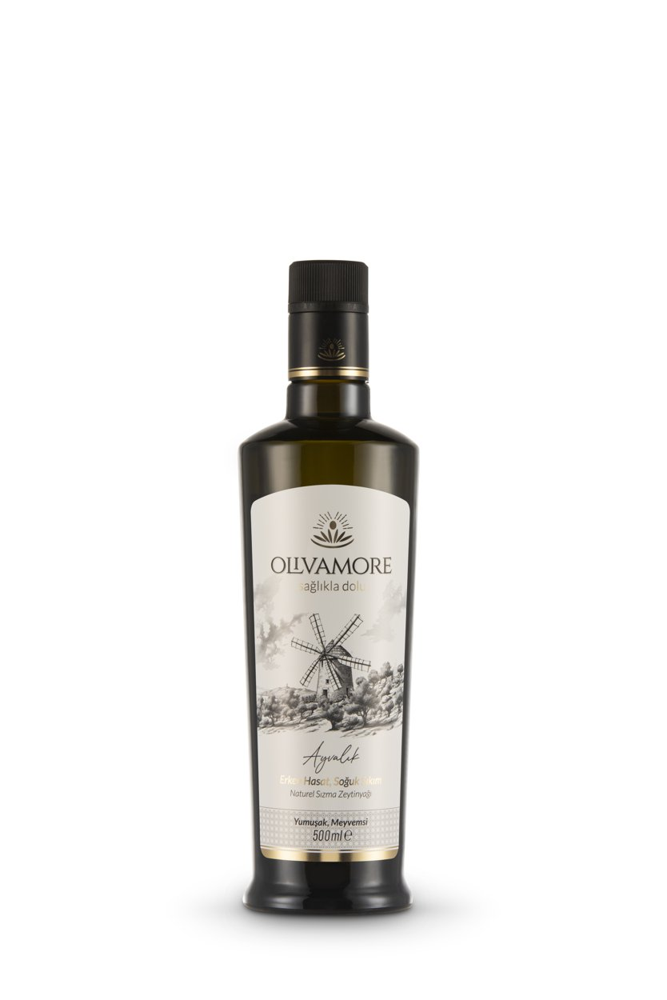
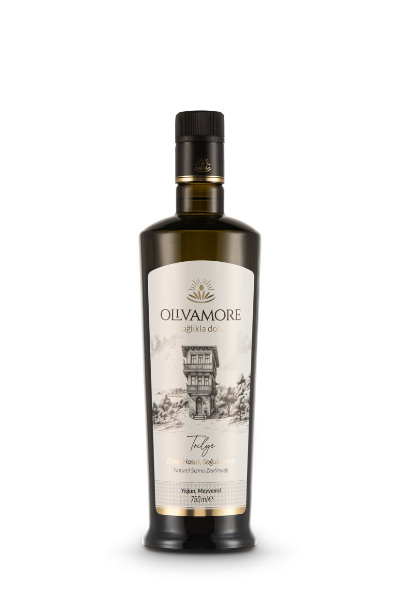
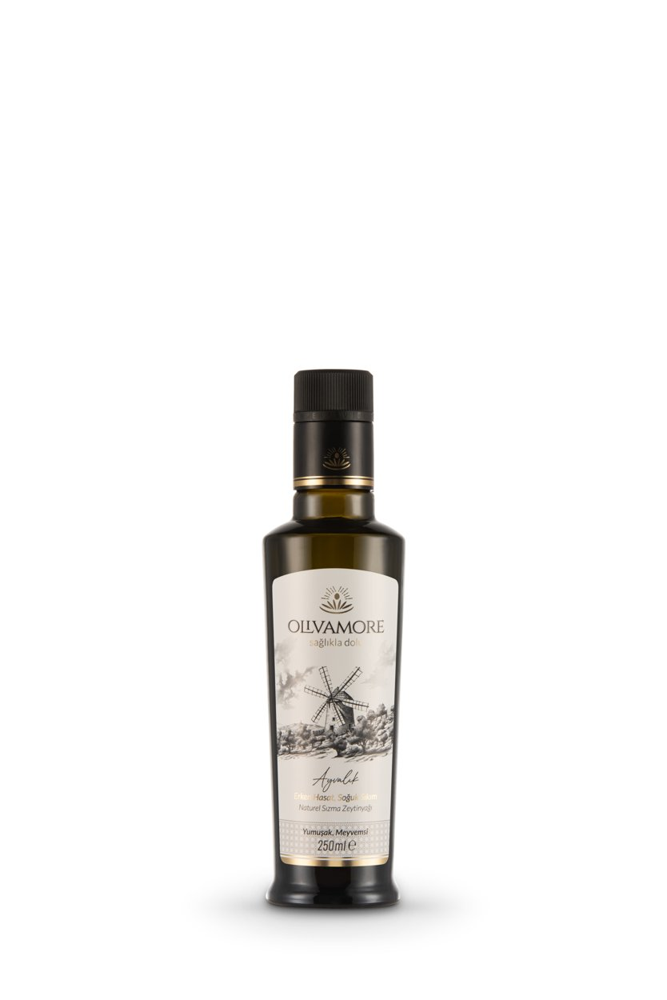
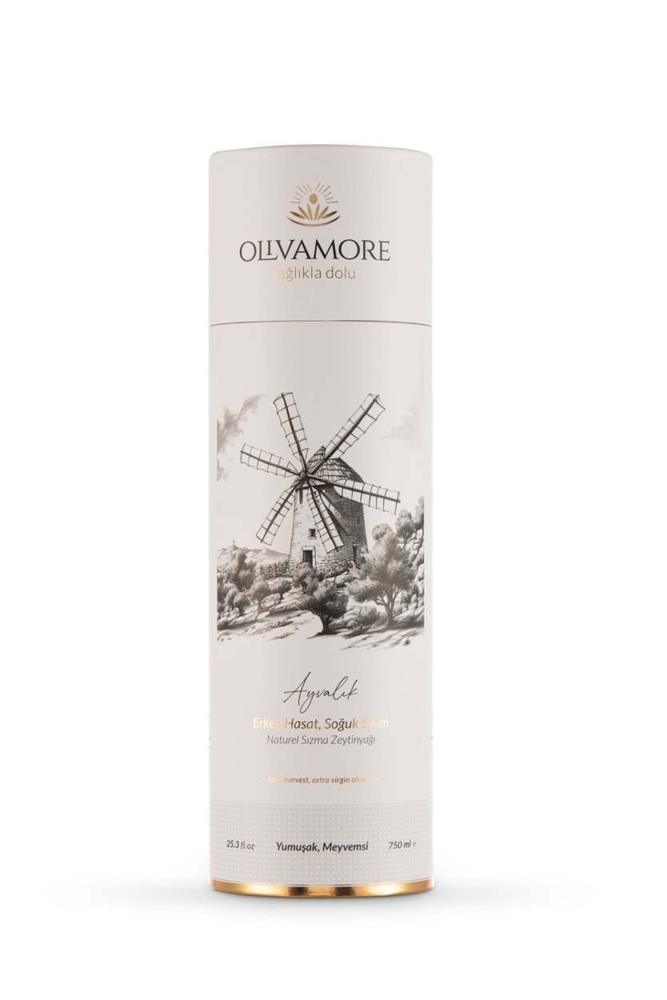
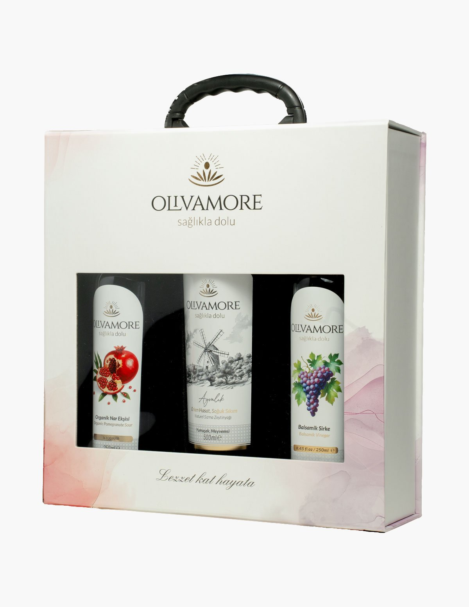
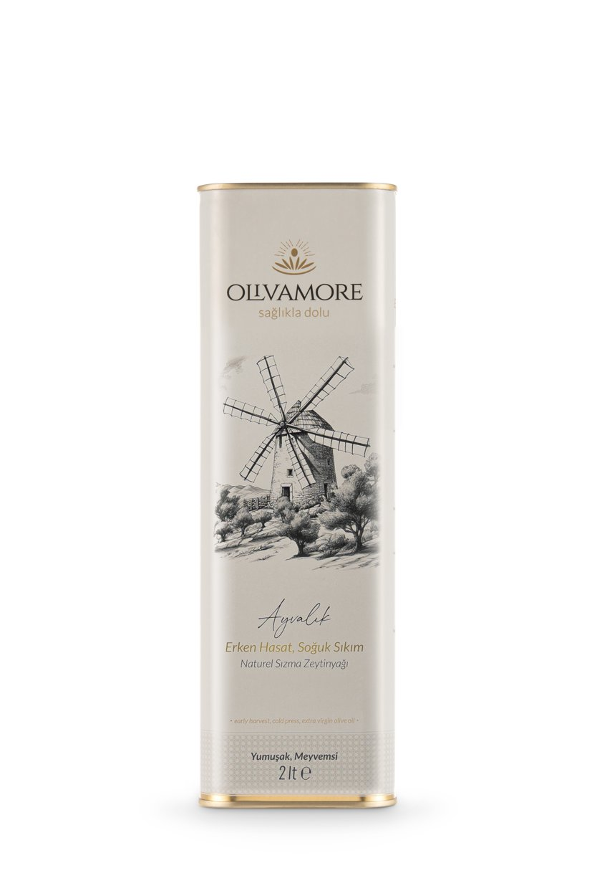
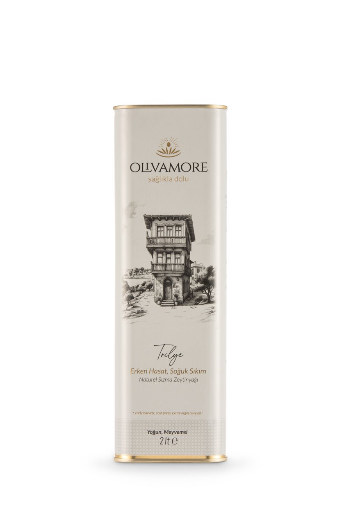
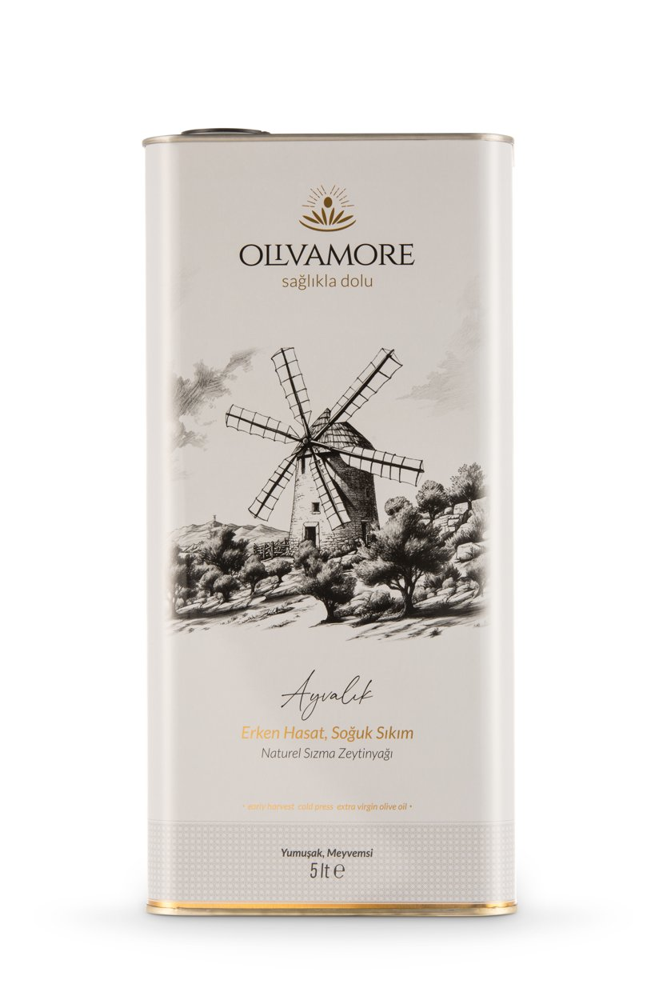

Bestseller
Finishing
Ayvalık Early Harvest
Smooth, fruity. October harvest, cold pressed. Glass bottle.
₺850 / 500ml
From Ayvalık's smooth texture to Trilye's intense character, choose by taste, use, volume and VAT-inclusive price.
Prices are in Turkish lira, include VAT and currently apply to delivery within Turkey only.

Smooth, fruity. October harvest, cold pressed. Glass bottle.

Intense, fruity. An early harvest with character. Glass bottle.

The introduction size. Same harvest, same care. Glass bottle.

In an elegant cylinder box with your handwritten note, ready to gift.

Choose your box, pick your 100 ml bottles, write your note.

The kitchen's everyday companion. Light-proof tin, same early harvest.

The big size for lovers of the intense profile. Light-proof tin.

For crowded tables and true olive oil consumers.
The everyday oil for hot dishes, braises and the oven. Gentle bitterness, balanced body.
There is no wrong answer. The question isn't "which is better", but which table, which palate.
Smooth, fruity · green-apple freshness · low bitterness
Intense, fruity · peppery finish · full-bodied character
Still undecided? Take the 10-question Palate Compass to see our first pick for you and two directions to explore.
Harvest timing, origin and batch-specific analysis can help you evaluate extra virgin olive oil. Olivamore publishes these details only when they are supported by the matching label or report; available records can be checked in the Harvest Passport.
Our Ayvalık early harvest offers a smooth, fruity profile that suits every day from breakfast to salads. Our Trilye early harvest is more intense and full of character; it makes a difference on fresh bread and at the table. To try both, start with the 250 ml introduction size or a discovery box.